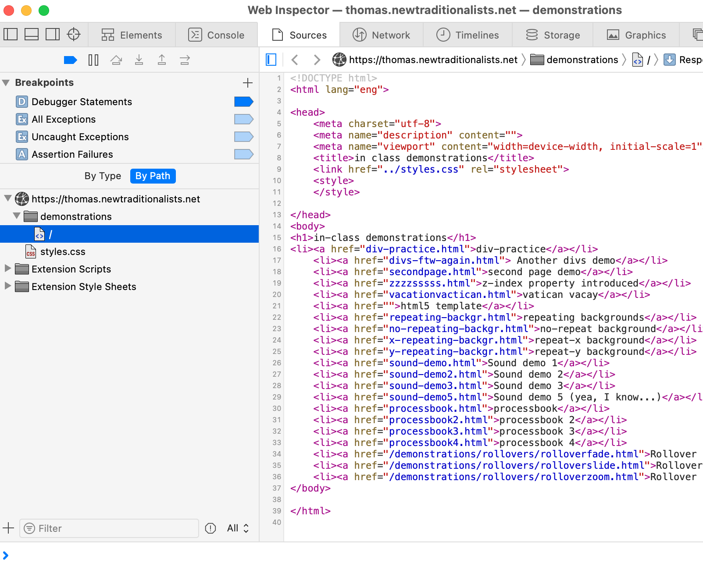

net.art series
Research Section
Page 2

When you open and view the source code of html online, using the Develop tool, this is the window that pop's up.
In the left subdivision you can navigate between css or html files. In the main subdivision on the right, you can read the code.
During my research phase, I found this very helpful to use with my professor's examples of code published on his personal website.